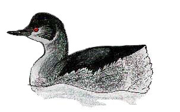

Black-necked Grebe
Rare winter visitor.
?/09/33 - Two birds "obtained"!
09/10/55 - Single bird (DEP)
26/02/70 - Single bird. Remained until 19/03
21/12/01 - Single bird (DH)
05/02/02 - Single bird (DH)
19/08/02 - Single bird, a juvenile (DH)
